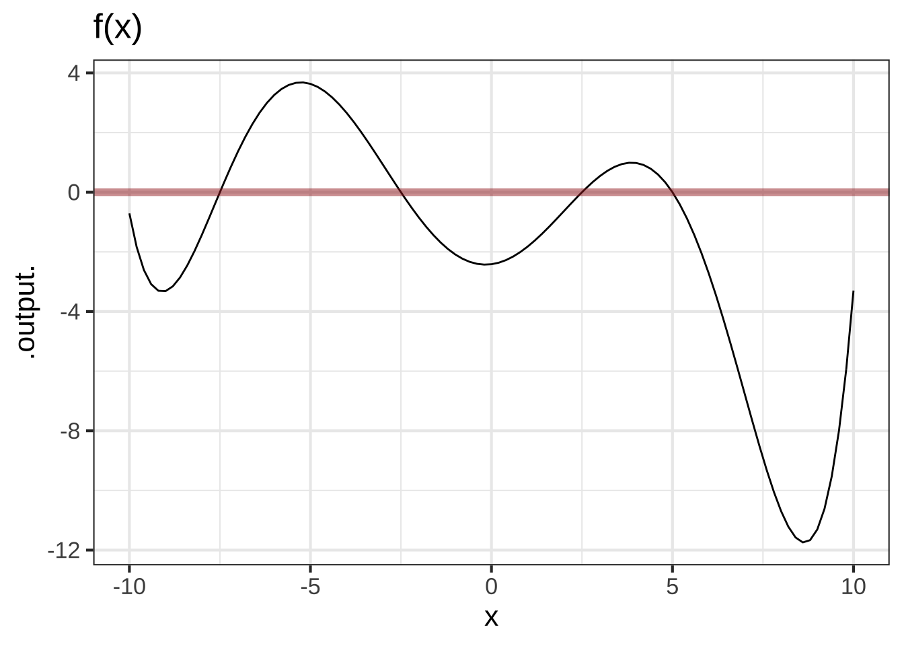
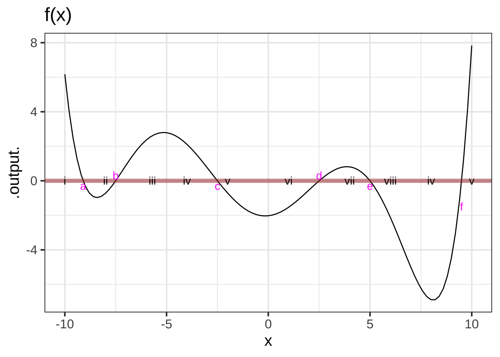
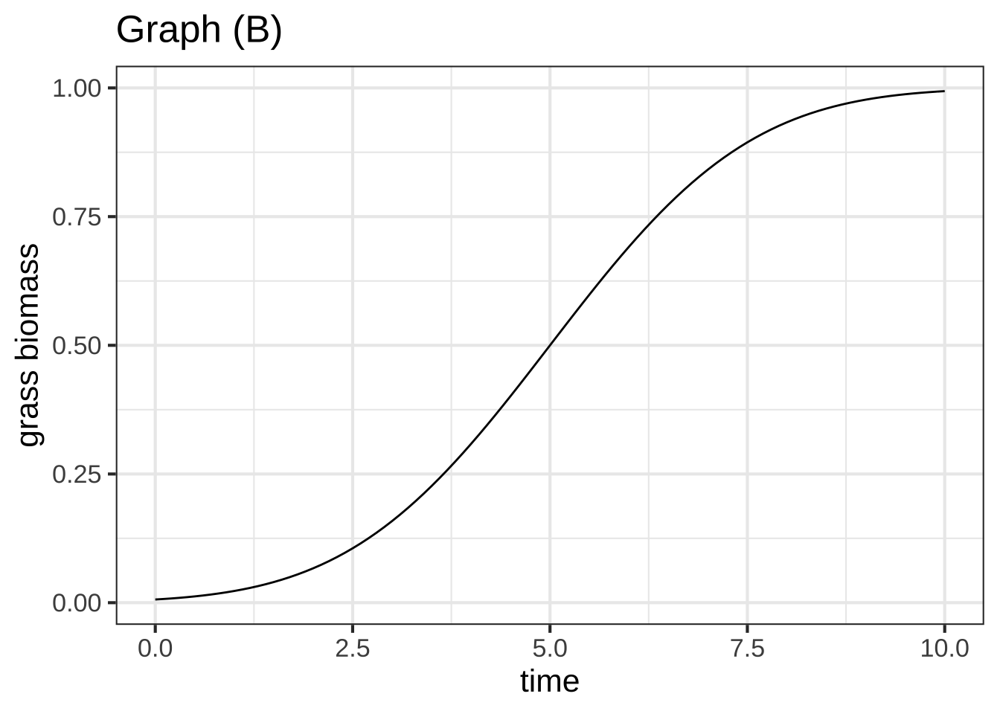
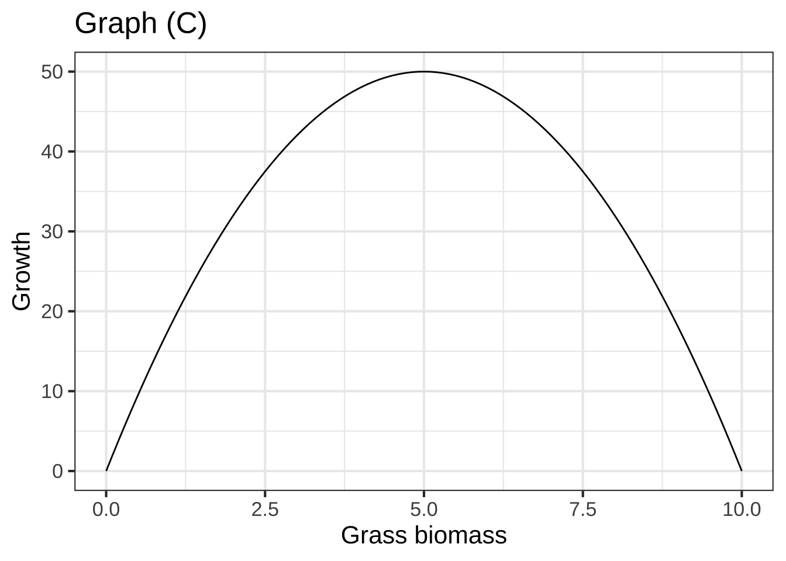

Chapter 49 Flows on the line
The previous two chapters presented ideas relating to dynamical systems: state, state-space, dynamical function, flow, trajectory, “solution.” Now we turn to the some of the phenomena seen in dynamical systems, starting in the simplest way possible: dynamical systems with a single state variable. We’ll focus on fixed points and their stability, which can be understood qualitatively (although you need to distinguish between a positive and a negative slope). Then we’ll look at a technique we have encountered since Block 2: approximation of a function by a straight-line function. Such linear dynamics have a straightforward exponential “solution.”
Finally, we’ll look at an important example of how careful observation of fixed points and the way dynamics change when we modify a parameter in the dynamical functions provides an understanding of a ecological stability and instability and the consequences that result.
49.1 Dynamical function and flow
In the previous chapter, we saw how to draw a flow field in a two-dimensional state space, evaluating the dynamical functions and using the results to construct a vector. We can’t practically visualize both the flow and the shapes of the two dynamical functions in a single plot, which makes it harder to understand structures such as fixed points.
Happily, with a one-dimensional state space, we can easily show both the flow vectors and the single dynamical function at once.
For ease of reference, we’ll name the dynamical function for the rest of this section \(f(x)\), so that the differential equation is \[\partial_t x = f(x)\ .\]
The flow itself appears as the example in Figure 49.1. The state space is the number line and the flow vectors are, as usual arrows that point from place to place in the state space.
Figure 49.1: A one-dimensional state space shown with its flow vectors.
Because the state space can be drawn without using the vertical coordinate of the page, we can use that vertical coordinate to show something else: the dynamical function, as in Figure 49.2.
Figure 49.2: A one-dimensional state space shown with its flow vectors.
The correspondence between the dynamical function and the flow field is easy to see in such a presentation. Where the output of the dynamical is large and positive (say, near \(x=0\)), the flow is in the positive direction and relatively fast, as shown by a long, right-pointing flow vector. When the output of the dynamical function is negative (around \(x=3\), for instance) the flow is in the negative direction: a left pointing arrow.
Near a zero crossing of the dynamical function, the flow arrows are negligibly short: the state velocity is very slow. Indeed, at the zero crossings, the state velocity is exactly zero. Such zero crossings are called fixed points: since the state velocity is zero, the state never moves!
We can see the dynamics near fixed points more closely by zooming in, as in Figure 49.3 which shows two of the system’s fixed points.
Figure 49.3: Zooming in on the flow for the system shown in Figure 49.2.
Notice in Figure 49.3 that the flow is slower the nearer the state is to the fixed point, but it is only exactly zero at the fixed point.
A calculus technique you will be familiar with from previous Blocks is zooming in a region that we want to examine in detail.
Figure 49.4: Zooming in closely on each of the fixed points seen in Figure 49.3.
The short pieces of the dynamical function shown in Figure 49.4, are, like short pieces of any continuous function: almost exactly straight lines. For the left fixed point, the dynamical function is \(f(x) \approx -2.804 (x + 3.055)\) while for the right it is \(f(x) \approx 5.065 (x + 1.586)\). In Section 48.3 we found symbolically the solutions for dynamical functions in this form. For \(x_0\approx-3.055\) the solution is \[x(t) \approx (x_0 + 3.055)e^{-2.804 t} - 3.055\ ,\] while for \(x_0\approx -1.586\) the solution is \[x(t) \approx (x_0 +1.586)\, e^{5.065 t} - 1.586\ .\] There is something fundamentally different about these two solutions. One of them is exponential decay toward the fixed point, while the other grows exponentially away from the fixed point. We call the dynamics near the fixed-point with exponential decay stable and the dynamics near fixed-point with exponential growth unstable.
::: {.takenote data-latex=""} Graphics such as Figure 49.2 let you see both the flow and the dynamical functions together in one place.
How about also showing trajectories? Unfortunately, the two-dimensional extent of a computer screen or a piece of paper make it hard to include still more information in an intelligible way. It would be nice to have a third dimension for the display.
Major Austin Davis developed such a display, using time as the third dimension. In the movie below, the state space is shown as a horizontal line, as before. The vertical axis shows the dynamical function as in Figure 49.2. The dynamical function is shown in another way: as the hue and intensity of color, which lets you focus on the activity in the state space. This activity is shown by the moving gray triangles. Each triangle is placed on the phase line to mark an initial condition, then moves right or left according to the dynamics.
:::
49.2 Generic behavior
So long as two dynamical systems have similar fixed points with the same stability, their trajectories will be much the same. For example, our model dynamical function might be different in detail, as in Figure 49.5, and still produce the same behavior.
## Warning: Removed 32 row(s) containing missing values (geom_path).Figure 49.5: The dynamical function shown in black is a distortion of \(f(x)\) from the previous plots. Yet the flow field is practically identical and leads to the same outcomes as \(f(x)\) for any initial condition.
So long as two flows have similar fixed points with the same stability, their trajectories will be much the same. Consequently, studying the fixed points without worrying about the details of the dynamics gives a huge amount of information about the system.
For example, Figure 49.6 shows a score of different time series following the solutions from a score of initial conditions. The long-term behaviors for all the time series is similar: they converge to one or another of the stable fixed points.
Figure 49.6: Time series from the differential equation \(\partial_t x = f(x)\) starting at many initial conditions. The locations of the three fixed points are marked with horizontal lines. All the solutions convert to one or the other of the two stable fixed points in the system, and depart from the unstable fixed point.
It’s worth pointing out a consequence of the mathematics of continuous functions: if a system with a continuous dynamical function has a region of state space with two different fixed points, there must be an unstable fixed point in between them.
49.3 Linearization
You can see in Figure 49.6 that many of the solutions approach their final, equilibrium value in an exponential manner. This is particularly true for the solutions with initial conditions very near the stable fixed points. All these solutions are characterized quantitatively by the parameter \(a\) in the exponential solution \(A e^{a t}\). (Remember, \(a < 0\) when there is exponential decay.)
Quantitative knowledge of \(a\) is helpful to understand the time scale of the exponential approach to stable fixed points. We can find a numerical value for \(a\) for each fixed point by constructing a linear approximation to the dynamical function near each of the fixed points.
The procedure involves the same principles as introduced in Block 2 for constructing low-order polynomial approximations to functions, but here “low-order” means “first order.”
The analysis is done separately for each of the fixed points, so the first step is to find the fixed points, the values \(x^\star\) such that \(f(x^\star) = 0\).
Recall from Block 2 the Taylor polynomial approximation to a function \(f(x)\) centered on a point \(x^\star\): \[f(x) \approx f(x^\star) + \partial_x f(x^\star) \left[x - x^\star\right]\] When \(x^\star\) is a fixed point, \(f(x^\star) = 0\) so the approximation is simply \(f(x) \approx \partial_x f(x^\star) \left[x - x^\star\right]\). Keep in mind that \(\partial_x f(x^\star)\) is the derivative function \(\partial_x f\) evaluated at the input \(x^\star\), so \(\partial_x f(x^star)\) is simply a quantity, not a function. Indeed, \(\partial_x f(x^star)\) is exactly the quantity \(a\) in the exponential solution \(e^{a t}\).
This process of constructing the linear approximation \(f(x) \approx a \left[x - x^\star\right]\) is called linearization.
Example 49.1 Consider the first-order differential equation \[\partial_t x = f(x) \equiv r x (x - x/K)\] where \(r\) and \(K\) are parameters that are greater than zero. Linearizing the nonlinear function \(f(x)\) lets us figure out how fast or slow is the exponential growth or decay of the solutions for initial conditions near the fixed points.
There are two fixed points, one at \(x_1^\star = 0\) and the other at \(x_2^\star = K\). What is the exponential parameter \(a\) for each of the fixed points.
The derivative (with respect to \(x\)) \(\partial_x f(x)\) can be found with the product rule from Block 2. It is \[\partial_x f(x) = r\, (1 - x/K) - r\, x\, (1/K)\]
Evaluating \(\partial_x f(x)\) at the two fixed points \(x_1^\star = 0\) and \(x_2^\star = K\) gives
\[\partial_x f(x_1^\star) = r\ \ \ \text{and}\ \ \ \partial_x f(x_2^\star) = -r\] Solutions near \(x_1^\star\) will grow exponentially as \(e^{r t}\), unstable since \(0 < r\). Solutions near \(x_2^\star\) will decay toward \(x_2^\star\) in an exponential manner as \(e^{-r t}\).
It’s critical to distinguish carefully between \(x^\star\), which is the location of the fixed point being examined, and \(x_0\), which is the initial condition of the state, that is, \(x(t=0)\).
Example 49.2 \(\ \)
Let’s return to the model of saving for retirement in Chapter 47: \[\partial_t V = r\, V + M\ .\] The state variable here is named \(V\). The dynamical function is \[g(V) = r\, V + M\] where \(r\) is the interest rate (say, 3% per year which is \(r=0.03\) per year) and \(M\) is the monthly contribution. To keep the units consistent, we set the units of \(t\) to be years, of \(r\) to be 1/years, of \(V\) to be dollars and of \(M\) to be dollars-per-year. So a monthly contribution of $1000 would come to \(M=12000\) dollars-per-year.
Find the amount \(V\) that will result from 30 years of savings with an initial condition \(V_0 = 0\).
Step i) Find the fixed point. This is a value \(V^\star\) such that \[r\, V^\star + M = 0\ \ \ \implies \ \ \ V^\star = -M/r\ .\] Step ii) Find the derivative of the dynamical function evaluated at the fixed point: Since \(g(V)\) happens to be a straight-line function, we know the derivative is a constant. So \(b = \partial_x g(V^\star) = r\).
Step iii) Translate the state variable into \(y = V - V^\star\). The dynamics in terms of \(y\) are \(\partial_t y = b y\), which has an exponential solution \(y = A e^{bt}\).
Step iv) \(A\) is the initial condition in terms of \(y\). This will be \(y_0 = V_0 - V^\star\). Since we stated that \(V_0 = 0\) (no savings at the start), \(y_0 = -V^\star\) and the solution is \[y(t) = -V^\star e^{bt} = \frac{M}{r} e^{rt}\ .\]
Step v) Translate the solution in step (iv) back into terms of \(V(t)\). Since \(y(t) = V(t) - V^\star\), this will be \(V(t) = y(t) + V^\star\) or, \[V(t) = \frac{M}{r} e^{r t} + V^\star = \frac{M}{r} \left[ e^{r t} - 1\right]\ .\] To get an idea of this retirement plan, that is, \(r=3\%\) and \(M=12000\) dollars-per-year, let’s see how much you’ll have after 30 years and 40 years.
V <- makeFun((M/r)*(exp(r*t)-1) ~ t, r=0.03, M=12000)
V(30)## [1] 583841.2V(40)## [1] 928046.8After 40 years of contributions, your retirement account will have almost one-million dollars.
You could have accomplished the same calculation using integrateODE(), like this:
Soln <- integrateODE(dV ~ r*V + M, V=0, M=12000, r=0.03,
tdur=40)
Soln$V(30)## [1] 583841.2Soln$V(40)## [1] 928046.849.4 Bifurcation
A broad, pressing, social concern goes under the name sustainability. Is it sustainable to burn fossil fuels at steady historical levels, let alone at the increasing rate seen since over the last century? Climate scientists answer resoundingly with a no. Is it sustainable to increase food production to the levels needed for developing economies to approach the sort of consumption seen in rich economies?
Dynamical systems are highly relevant to the questions surrounding sustainability. If the economy is near a stable fixed point, then it is sustainable; the trajectory will bring the state of the economy toward the fixed point. On the other hand, if the economy is near an unstable fixed point, we can expect exponential change.
If such exponential changes are not seen, does that mean we’re not near an unstable fixed point? One of the terms used to mark the possibility that a stable system can quickly turn unstable is tipping point, defined as
The point at which a series of small changes or incidents becomes significant enough to cause a larger, more important change. Source: New Oxford American Dictionary
The mathematics of tipping points is not at all the same as exponential growth. Certainly, in exponential growth one sees a relatively slow rate of change increase to a large rate of change, a situation described by journalists as “sky-rocketing” or “explosive” or, literally, “exponential.” As you’ve seen, exponential growth is a phenomenon seen in linear dynamical systems; there is no special point at which the dynamics changes.
There is actually an area of mathematical theory called catastrophe theory. We’ll use a famous example to show how catastrophes or tipping points are modeled mathematically.
The example comes from a 1977 article in Nature, one of the world’s most prestigious scientific journals. The article, by Robert May, is entitled “Thresholds and breakpoints in ecosystems with a multiplicity of stable states.” The words “thresholds” and “breakpoints” have not been encountered yet in this book, but “multiplicity of stable states” should bring to mind the sort of dynamics seen in Figure 49.2.
The setting for the catastrophe is an otherwise bucolic scene, livestock grazing on a pasture. A pasture is a kind of factory for producing vegetable biomass; the grazing is the consumption of the biomass produced.
As a model for the production of biomass, denoted \(v\) for “vegetation,” we’ll use \[\partial_t v = r v \left(1 - \frac{v}{K}\right)\] which, as we’ve seen, has an unstable fixed point at \(v_1^\star=0\) and a stable fixed point at \(v_2^\star=K\). Physically, the fixed point \(v_1^\star\) corresponds to a bare field, without any vegetation. It’s unstable because any small disturbance in the form of a stray seed landing in the dirt can lead to germination and the rapid growth of vegetation as seeds from the germinated plant spread across the field. Once the field is covered in vegetation, the growth can be exponentially rapid at first but then runs into limited resources: there is only so much sunlight that falls on the field, and the growing vegetation will eventually consume the soil nutrients and water.
This biomass production model corresponds to a sustainable system. Once the biomass level is at \(v_2^\star\) it will stay there.
But biomass production is not the only thing going on in the pasture. The grazing animals—let’s imagine they are cows—are consuming the grass. To start very simply, suppose that each cow consumes amount \(C\) of biomass each day. If there are \(H\) cows, the total consumption is \(H C\) per day. This modifies the dynamics to a slightly new form \[\partial_t v = r \,v(1-\frac{v}{K}) - HC\]. The original, ungrazed dynamics are compared with the grazed dynamics in Figure 49.7.
Figure 49.7: Comparing the pasture dynamics for different herd sizes.
With grazing, the net growth of biomass is reduced due to the removal of the consumed biomass by the cows’ consumption. For a moderate herd size, there is still a stable fixed point, but it is at a lower level of biomass than would be seen in the ungrazed field. But if the herd size is too large, the ecosystem completely collapses.
This is an example of a tipping point or catastrophe. For moderate herd sizes, there remains a stable fixed point. A farmer might be tempted to add another cow to the pasture, and that’s sustainable: there is still a stable fixed point. Indeed, the movement of the stable fixed point might not even be noticed. But add even one cow too many and the fixed point entirely disappears. Still, herd management can fix the problem; take away the cow that tipped the pasture and the fixed point will return.
We’ve often referred to the modeling cycle, using the results of a model to suggest possible improvements in the model.
Missing from the pasture model is a simple idea of how cows eat. If there is very little biomass, the cows can’t continue to eat their fill. Will the reduction in consumption per cow preserve the stable fixed point?
In his Nature article, May modeled the consumption rate by a single cow with the functional form \[C(v) \equiv \frac{\beta v^2}{v_0 - v^2}\] which is graphed for \(\beta=0.1\) and \(v_0 = 3\) in Figure 49.8
consumption <- makeFun((beta*v^2/(v0^2 + v^2))~ v, beta=0.1, v0=1)
slice_plot(consumption(v) ~ v, domain(v=c(0,10))) %>%
gf_labs(y="Consumption (tons/day)", x="v: available biomass (tons)")Figure 49.8: Consumption of vegetation by a single cow as a function of the amount available in the pasture.
You can recognize this as a form of sigmoid. When the amount of vegetation is very large, a cow will eat her fill. That’s the saturation of the sigmoid. For small \(v\), the cow needs to hunt around for vegetation tall enough to eat, reducing the consumption steeply.
Figure 49.9 modifies the pasture dynamics to incorporate this sigmoidal model of consumption.

Figure 49.9: Pasture dynamics for a sigmoidal consumption function.
We can start the story with 3 cows in the pasture. Vegetation growth is more than sufficient to provide for these cows. You can see this from the stable fixed point at about 9 tons of biomass, which is more than enough to reach saturation of the sigmoidal consumption function.
The farmer decides to increase the herd to 5 cows. Nothing much happens. The stable fixed point is at about 8 tons of biomass, entirely adequate to keep the cows well fed in a sustainable manner.
Can the pasture be sustainable with 7 cows? The stable fixed point remains, now at about 6.5 tons at biomass. The cows are still sustainably well fed.
You can see in the 7-cow dynamics a hint of what of what might go wrong. There is a new, unstable fixed point at about 3 tons of biomass. If the pasture ever happened transiently to fall below 3 tons—say due to a summer frost followed by a return to normal weather—the vegetation biomass will head toward the new stable fixed point at 0.5 tons of biomass. At this level, the cows are eating only about one-quarter their normal amount and we can fairly say that the ecosystem has collapsed. But until such a disaster happens, the farmer will see only a sustainable level of biomass with cows well fed.
It is only we, who have a mathematical model of the situation, who can anticipate the potential problems.
Since things are fine with 7 cows in the field, the farmer lets an eighth cow join the herd. That’s the tipping point. The happy herd fixed point at 6.5 tons of biomass has disappeared, and the ecosystem collapses, even without a weather disaster.
Removing the eighth cow from the pasture will not fix the situation. With seven or even six cows in the pasture, the system won’t be able to grow out of the stable fixed point with 0.5 tons of biomass. Reducing the herd size to five will remove that 0.5 ton fixed point, but the grass will grow back very slowly; the dynamics give positive growth, but very close to zero.
Avoiding such catastrophes is a major motivation for mathematical modeling.
49.5 Exercises
- V-YGS71: Find the location of fixed points in a one-state-variable system by finding zeros of the dynamical function:
- graphically or computationally when all parameters are known
- analytically in simple cases (e.g. quadratic polynomial)
- J-YOLEG: Deduce the stability of a fixed point by:
- examination of the slope of the dynamical function in a first-order system
- F-QSK86: Identify the long-term behavior of trajectories starting near an unstable fixed point. For first-order systems, identify when the long-term behavior terminates at a stable fixed point, and which one.
- X-DE4WK: Construct the linear approximation to a dynamical function at a fixed point:
- evaluate the derivative of the dynamical functions at the fixed point
- C-QDOXL: Given a first-order differential equation of the form \(\partial_t x = a x + b\), find the solution analytically in terms of \(x\).
- Determine the location of the fixed point \(x^\star\).
- Translate the equation to be in terms of \(y\), where \(y = x - x^\star\).
- Write down the solution in terms of \(y\).
- Translate the solution back to be in term of \(x\).
- L-ZPTTA: Verify (by differentiation) a proposed solution to a first-order differential equation.
- L-ZPDIJ: Construct graphs, with properly labeled axes, of
- Newton’s Law of Cooling
- population growth with and without a carrying capacity
Still relevant …
- N-O88YI: From a trajectory drawn on a graph of a flow field, construct a plausible time-series plot
Exercise 49.01:  RdgPMo V-YGS71 J-YOLEG
RdgPMo V-YGS71 J-YOLEG
The following R/mosaic statements will define a dynamical function named \(f()\) for the differential equation \[\partial_t x = f(x)\ .\] Your task is to use R/mosaic statements to locate all of the fixed points in the interval \(-10 \leq x \leq 10\). For each fixed point find the stability (stable or unstable) and find the parameter in the exponential solution \(e^{at}\) near the fixed point. (Hints: Zeros() and D().)
f <- rfun(~ x, seed=385)
Exercise 49.03: aCMm4M J-YOLEG
The graphs below show two dynamical functions, \(f(x)\) and \(g(x)\), in the two differential equations \(\partial_t x = f(x)\) and \(\partial_t x = g(x)\).

- For function \(f(x)\),
- locate all of the fixed points in the domain \(-10 \leq x \leq 10\) and determine whether each one is stable or not
- find the state value \(x\) where the state is growing the fastest.
- find the state value \(x\) where the state is decreasing the fastest.
- Answer the questions in (a) but for \(g(x)\).
Exercise 49.05: 26PFIN F-QSK86 V-YGS71
The dynamical function in the graph is a sixth-order polynomial. It has several fixed points, labelled “a”, “b”, “c”, and so on.
The numbers i, ii, iii, etc. mark some initial conditions.

For each of the initial conditions marked in the graph, say whether the long-term behavior of the trajectory from that point will lead to one of the fixed points (and which one) or to \(-\infty\) or \(\infty\). (Hint: That the function is a sixth-order polynomial should tell you something about the functions behavior beyond the domain shown in the graph.)
Exercise 49.07: owYlop X-MO2V8
Consider the first-order differential equation
\[\partial_t V = g(V)\] with a fixed point at \(V^\star\).
For each of the following mathematical objects, say whether the object is a function or a number.
- \(V\)
- \(g()\)
- \(\partial_t V\)
- \(V^\star\)
Exercise 49.09: pgjnB1 X-DE4WK
Here is a generic, linear differential equation:
\[\partial_t x = a x + b\ .\] 1. How many fixed points are in this system?
For one of the fixed points you identified in (1), what is the value for the location \(x^\star\) in terms of the parameters \(a\) and \(b\)?
For one of the fixed points, translate the equation to be in terms of \(y\) in \[\partial_t y = ???\ .\]
Write down the symbolic solution to the equation in (3). (Hint: it will involve the parameter \(a\) but not \(b\).)
Translate the solution in (4) back into terms of \(x\). (Hint: The solution will involve both parameters \(a\) and \(b\).)
Exercise 49.11: kNlQjd L-ZPTTA
Use differentiation to verify that \[y(t) = 4 e^{2 t} + 7\] is a solution to the differential equation \[\partial_t y = 2 y - 14\ .\]
Exercise 49.13: a0w5RG N-O88YI

For the dynamical system graphed above, sketch a plausible time series solution starting from initial condition \(x_0=-2.5\).
Exercise 49.15: EBO7nv L-ZPDIJ
Suppose that \(p(t)\) is the population density of squirrels over time. Draw the dynamical function \(s(p)\) in the differential equation \[\partial_t p = s(p)\] that will produce a population that grows form a very small density of 4 squirrels per hectare to a carrying capacity of 50 squirrels per hectare. Mark the units on your graph.
Challenge: Arrange the units on the output of \(s(p)\) so that it will take roughly 3 months to reach the carrying capacity.
Exercise 49.17: fFZUA5 L-ZPDIJ
Coffee at an initial temperature of \(T=\) 80 degrees C is in a closed thermos at a (very cold) construction site where the ambient temperature is -20 C. Suppose, with the thermos closed, it takes 4 hours for the coffee to fall to a tepid 30 degrees C. The thermos cools in accord with Newton’s Law of Cooling.
Draw a quantitatively reasonable graph of the dynamical function consistent with these facts in the differential equation \[\partial_t T = f(T)\ .\]
Exercise 49.19: 136TO6 J-YOLEG
A first-order dynamical system \(\partial_t x = g(x)\) can have any number of fixed points, depending on the shape of \(g(x)\).
A. Draw a graph of a \(g(x)\) that has seven fixed points.
B. Explain why, when there are multiple fixed points, a stable fixed point will have a neighboring fixed point that is unstable, and vice versa.
Exercise 49.21: cAKQiT L-ZPDIJ
In the cows eating grass model, we proposed the model \[ \partial_t v = \frac{v}{3} \left(1-\frac{v}{25}\right)\] for the growth of grass in the field, where \(v\) is in tons of biomass and \(t\)
A. According to the model, what is the carrying capacity of the field?
B. The field is most productive when the grass is growing at the highest rate possible. At what level of vegetation biomass is the biomass increasing the most rapidly?
C. At that most productive level of biomass, what is the rate of growth of the vegetation? (Make sure to give units.)
Exercise 49.23: L6hTUu V-YGS71
Consider a hay field that has just been harvested in the middle of summer. The grass has been cut short and the weather is still conducive to growth. What’s going to happen?
The grass will grow back, a very simple model of which will be \(\partial_t G(t) \equiv C\). This rate, \(\partial_t G(t)\), corresponds to the grass growing back at a constant rate. Imagine we measure this rate as tons of biomass per day, and measure time \(t\) in days.
Question A To model the everyday real world of growing grass, should \(C\) be positive or negative?
- positiveNice!
- negative︎✘ The amount of grass would be decreasing. This is not what we ordinarily think of as “growing”
- zero︎✘ \(\partial_t G(t) = 0\) implies no change at all.
Question B What units does the output \(G(t)\) have?
- tons per day︎✘ These are the units of \(C\) and therefore, because of the equality, of \(\partial_t G(t)\). We’re asking about the units of \(G(t)\), not \(\partial_t G(t)\).
- tonsExcellent!
- days︎✘ This is the unit of the input \(t\), not the output \(G(t)\).
- tons/day^2︎✘
Question C Which of these equations best describes the trajectory of the growing grass under the \(\partial_t G(t) = C\) dynamics?
\(G(t) = G(0) + C\)︎✘ \(G(t) = G(0) + C t\)\(\heartsuit\ \) \(G(t) = G(0)\sin(t/C)\)︎✘ \(G(t) = G(0) t + C\)︎✘
Question D According to the dynamics \(\partial_t G(t) = C\), what will \(G(t)\) look like (without future harvesting)?
- Growth until the field is choked up with grass.︎✘
- Growth without limit.Nice!
- Oscillating growth and decline as the seasons pass.︎✘ This might be the case in the real world, but the simple model does not incorporate seasonality.
There are two obvious shortcomings of the model \(\partial_t G(t) = C\). First, when the amount of grass is very small (think little spouts spread widely apart) growth should much smaller than when the grass is plentiful. Second, at some point the grass is so dense that further growth is impossible, so \(\partial_t G(t)\) falls to zero (or even negative). The maximum amount of biomass that can be sustained by the field is called the grass’s carrying capacity.
The standard simple model for a system with growth to a carrying capacity is \[\partial_t G(t) = r G(t)(K-G(t))\] This model is famous and has a name: logistic growth.
Question E The logistic growth model has two fixed points. What are they?
- \(G=0\) and \(G=K\)Right!
- \(G=0\) and \(G=1/K\)︎✘ Plug \(1/K\) into the dynamics in place of \(G\). Do you get \(\partial_t G = 0\)?
- \(G = \pm K\)︎✘ Plug \(-K\) into the dynamics in place of \(G\). Do you get \(\partial_t G=0\)?
- \(G=0\) and \(G=-K\)︎✘ Plug \(-K\) into the dynamics in place of \(G\). Do you get \(\partial_t G=0\)?
Question F Which of these stories best describes the trajectory of the logistics growth version of \(G(t)\) starting with \(G(0)\) very small but positive?
- The grass grows slowly at first, then gradually growth speeds up and stays high.︎✘
- The grass grows rapidly at first then declines gradually to no growth.︎✘
- The grass grows slowly, then grows faster until it reaches a biomass where the growth rate declines steadily to zero.Excellent!
Here are three graphs.

Question G Which of the graphs represents a possible trajectory \(G(t)\)?
- A︎✘
- BRight!
- C︎✘ This is a graph of dynamics, not the trajectory. Look at the x-axis label.
- none of them︎✘
Exercise 49.25: 61zaad J-YOLEG V-YGS71
Consider the differential equation \[\partial_t x = \sin(x)^2 + x + 1\ .\]
Where is the fixed point?
Is the fixed point stable?
Exercise 49.27: qd50WJ J-YOLEG V-YGS71
The interactive app displayed below implements a version of the pasture-cow dynamics with different parameters than the one in the main body of the text.
The app draws the various functions involved:
- The intrinsic logistic model growth dynamics with no cows.
- The total consumption by the herd of cows.
- The net growth, which is the difference between (1) and (2).
And, you can play the role of farmer by changing the herd size.
Using the app, answer these two questions:
How many cows can you put in the pasture before the addition of even a single additional cow will cause collapse of the ecosystem?
Once a collapse has occurred, how many cows will you need to remove in order for the pasture to show growth toward a healthy equilibrium?
Exercise 49.29: 9qOKUM unassigned
Figure 49.8 shows a model of a cow’s consumption of vegetation as a sigmoidal function of the amount of vegetation. In addition to the mathematics of the function, it’s helpful to be able to translate the shape of the function into terms that make sense in the context of the model.
Question A At what level of available biomass is the cow most hungry at the end of the day? (Hint: Think about how you would measure how hungry a cow is at the end of the day.)
- 2 tonsCorrect. The consumption function is steepest here, meaning that if more grass were available the cow would eat the biggest proportion of it.
- 5 tons︎✘ The level of hunger can be measured by the slope of the consumption curve. If a cow would eat a lot more if the biomass were available, she must be hungry.
- 10 tons︎✘ The level of hunger can be measured by the slope of the consumption curve. If a cow would eat a lot more if the biomass were available, she must be hungry.
- 15 tons︎✘ Even if more grass were available, the cow wouldn’t each much of it. So, the cow is not very hungry.
Exercise 49.31: FUIt1Q unassigned
A debit card is a way to make withdrawals from a bank account. Funds in the account earn interest. In the economic environment of 2021, the interest rate is practically zero. But to make it possible to see the growth on a graph, we will stipulate it to be 4% per year. But if the account is in debt, then the debt grows at a much faster rate, perhaps 15% per year.
Suppose the amount in the bank account is \(m\) (in dollars) and time is \(t\) (in years). If \(m\) is positive, you are earning interest. If negative, you are in debt and the debt will grow.
Which of the following graphs reflects the dynamics of the system?


Figure 49.10: Scenarios A and B


Figure 49.11: Scenarios C and D
On the graph paper below, sketch out the modifications of the bank-card dynamics described. Identify any fixed points by marking them on the graph and say if they are stable or unstable.

- In addition to the normal bank-card dynamics, your employer makes a steady retirement deposit into your account at the rate of $100 per year.
- Your darling aunt looks at your account balance. If you have less than $300 in your account, she will add money daily at a rate of $100 per year. Otherwise, she does nothing.
- In addition to the normal bank-card dynamics, your employer makes a steady retirement deposit into your account at the rate of $100 per year.
Exercise 49.33: VCWRBs J-YOLEG
You and your older cousin are on a road trip. She rented a car that has not only “cruise control” (a technology from the 1970s that holds a constant speed without driver intervention) but also “car following,” that keeps the car a set distance \(D\) behind the car in front. Your cousin, knowing that you are a CalcZ student, asks you how the “car following” system works.
First, define some terms. You tell your cousin to denote the current, instantaneous distance from the car ahead as \(\xi\). You point out that when \(\xi - D > 0\), you’re a greater distance than \(D\) from the car ahead and therefore the velocity should be increased so you catch up. On the other hand, when you’re too close (\(\xi < D\)) you should decrease your velocity. The car-following system automates this, the relationship being \(\partial_t \xi = b (\xi - D)\).
Your cousin has never encountered a name like \(\xi\) so you decide to simplify. “Let \(x = \xi - D\), so \(x\) is positive if you are too far behind, zero when you’re at the right distance, and negative if you are too far ahead.” Conveniently \(\partial_t x = \partial_t \xi\), so you can write down the automatic relationship in terms of \(x\): \(\partial_t x = b x\) with \(b\) a positive number, such as 1.
Question A Where is the fixed point of the dynamics \(\partial_t\, x = b x\)?
- \(x=D\)︎✘ No, it should be \(\xi=D\), which means that \(x=0\).
- \(x=0\)Correct.
- \(\xi = 0\)︎✘ This corresponds to zero distance between you and the car in front of you. Not what we want!
- There’s no fixed point.︎✘
Question B Is the fixed point of \(\partial_t\, x = b x\) (with \(b > 0\)) stable?
- Yes, that’s why we can leave it to the automatic system.︎✘ True, we would want the automatic system to show stable fixed point behavior, but that’s not what’s happening here.
- No, the solution grows exponentially as \(e^{bt}\).Excellent!
- Yes, the solution decays exponentially as \(e^{bt}\)︎✘ But since \(b > 0\), this wouldn’t be exponential decay but growth.
Something’s wrong with the system you’ve sketched out. You want a stable following distance, doing the right thing if the car ahead speeds up or slows down, but your system is unstable.
Question C Which of the following rules will have a stable fixed point at \(x=0\)?
- \(\partial_t\, x = -b x\) (with \(b > 0\))Nice!
- \(\partial_t\, x = b^2 x\)︎✘ The coefficient on \(x\) is still positive, so this system is unstable.
- \(\partial_t\, x = b x^2\)︎✘ This system is stable for disturbances that make \(x < 0\), but unstable for disturbances that make \(x > 0\).
- \(\partial_t\, x = 0 x\)︎✘ In this system, \(x\) doesn’t change.